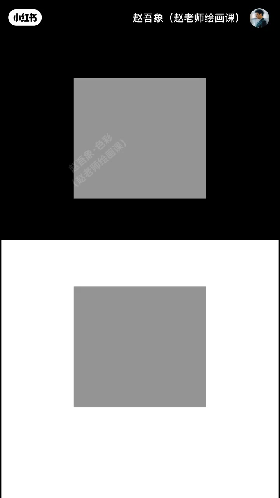
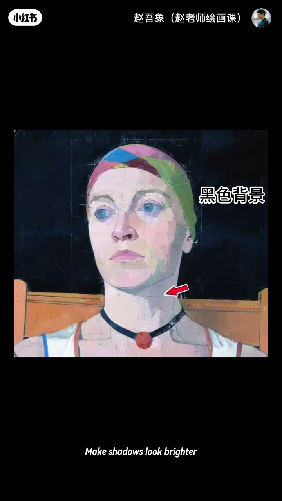
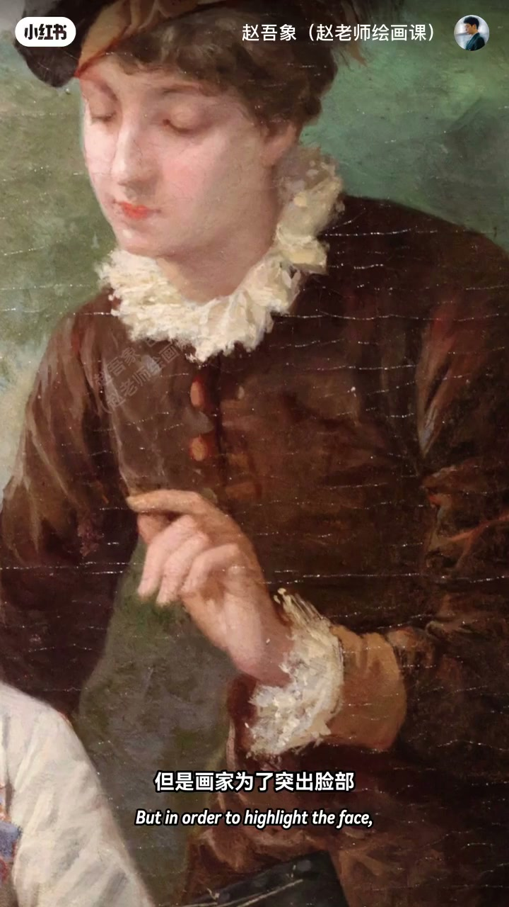
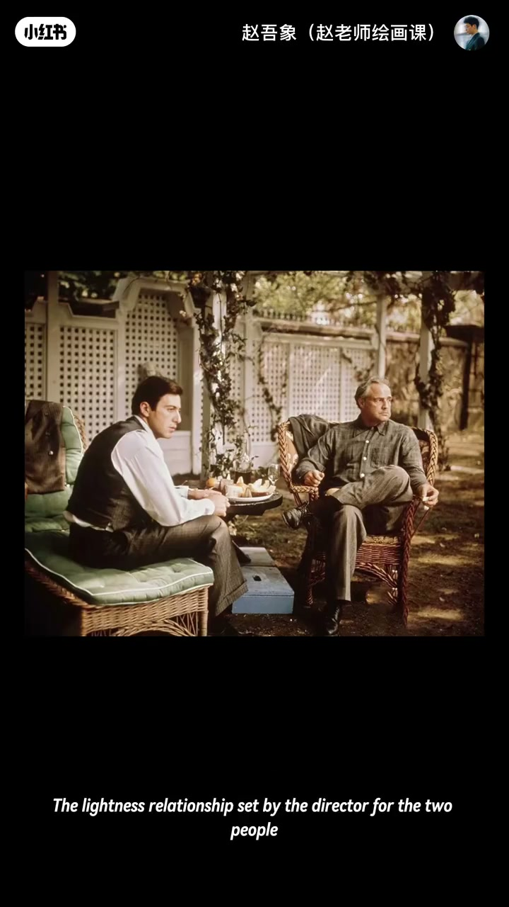

内容要点
两块同灰，黑底显亮、白底显暗——眼睛从不孤立看明度，而在比较中感知。本期明度同时对比：同一肖像换黑背景阴影更透亮，换白背景同样阴影更重更黑；想用阴影塑脸又不想影脏，可学大师换更深背景。进一步：用同时对比控视觉节奏——男孩衣领袖口同乳白，领旁极深、袖旁较浅，看起来一亮一暗。电影《教父》里 Michael 强明暗压迫、Vito 柔和明度沉稳。颜色无绝对明暗，力量来自与周围的关系。
知识结构
同灰因底不同显亮暗。
换深景透阴影；领袖同色异效。
教父明度关系叙事。
明度靠关系：改背景与邻色对比，就能改影子透感与画面强弱节奏。
00:00-00:55同灰不同亮：明度同时对比
考一考两块灰哪块更亮？上面因黑背景显更亮，下面被白背景衬托显更暗——其实完全一样。因为眼睛从不孤立看一个颜色，而在比较中感知明度。赵吾象承接上期冷暖对比，本期研究明度的同时对比。
00:15 灰块测验。

00:55-02:00换背景修影与控节奏
猜哪张是乌格罗原作：上面脸阴影更自然，下面阴影太深——其实人物完全一样，变的只有背景。黑背景让阴影更透亮，白背景让同样阴影更重更黑。若喜欢用阴影增强立体又不想影子太深显脏，可学大师换更深背景。
原理不止修色：可用同时对比控制视觉节奏。男孩衣领与袖口同乳白，领旁极深色块突出脸，袖口周围对比弱，故同色看起来一亮一暗——既统一又强弱有序。01:05／01:45。


02:00-02:52《教父》：明度关系即叙事
不止绘画，电影一样。《教父》镜头里两人衣服颜色不同，更重要是导演设定的明度关系：Michael 处在强烈明暗对比中，显冷峻压迫，暗示走向权力中心；年老 Vito 明度关系更柔和，隐喻岁月后的沉稳与隐藏力量。
所以颜色没有绝对明暗，它的力量永远来自和周围的关系。下期破解如何用色彩关系思维画出绝妙观感。02:15。

完整转录（54段）
以下文本由 Whisper medium 模型自动转录，可能存在少量识别误差，已尽可能修正。
考一考 下面两块灰色 哪块更亮
嗯 感觉上面的要亮一些
是的 上面的灰块 因为是黑色背景
所以显得更亮
而下面这个灰色 被白背景衬脱
显得更暗
没错 但其实啊 两块灰色 完全一样
啊 这是为什么
因为我们的眼睛 从来不会孤立地看一个颜色
而是在比较中 感知明度
嗨 大家好 我是赵五象
也上一期冷暖对比
本期 我要来研究 明度的同时对比
猜一猜 哪一张才是恶格罗的原作呢
嗯 我觉得上面的是
为什么
因为上面 人物脸上的阴影 画得更自然一些
而下面的 阴影有点太深了
观察得很好
但其实 两幅中的人物 完全一样
啊 变得只有背景
黑色背景 让阴影看起来更透亮
而白色背景 让同样的阴影 显得更重 更黑
所以啊 如果你喜欢用阴影 来增强人脸的立体感
但又不想让影子太深 而显脏
我们就可以学习大师 换一个更深的背景
问题就会迎刃而解
那 这个原理 只是一个可以用来修正颜色的技巧吗
当然不是
真正厉害的在于
我们可以利用同时对比 来控制画面的视觉节奏
比如这幅画
男孩的衣领和袖口 是完全一样的乳白色
但是画家为了突出脸部
给衣领旁边设置了极深的色块
而袖口周围 则是较浅对比稍弱
所以 即使两个地方用了同一块颜色
但实际看到的 却是一亮一暗的效果
这就叫 既统一 又强弱有序的视觉节奏感
不止绘画 电影里也完全一样
你看教父的这个镜头
两个人 虽然衣服颜色不同
但更重要的是 导演为两个人设定的明度关系
Michael身处在强烈的明暗对比中
这让他看起来冷俊 充满压迫感
也暗示着他逐渐走向权力的中心
而年老的Vito
所处的明度关系更加柔和
隐喻着他经历岁月之后的沉稳和隐藏的力量
所以 颜色没有绝对的明暗
他的力量永远来自他和周围的关系
下期 我们来破解
如何用色彩关系思维画出绝妙的观感
我们下期再见 拜拜